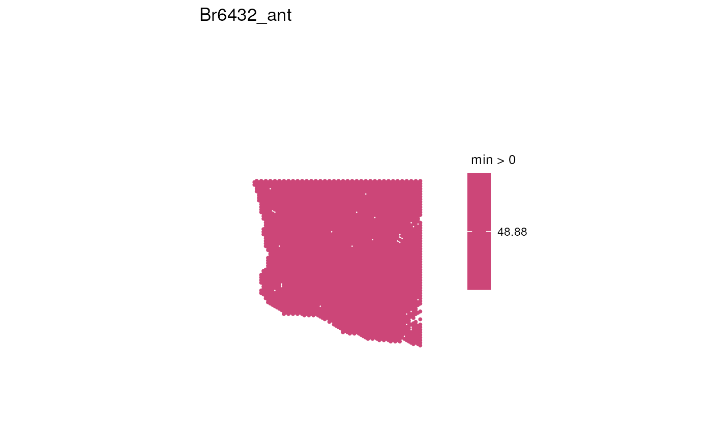

spot_plot.RdThis function is essentially a wrapper around spatialLIBD::vis_clus and spatialLIBD::vis_gene, suitable for merged samples (each sample in the SpatialExperiment 'spe' is a donor consisting of multiple capture areas, with colData column 'exclude_overlapping' indicating overlapping spots to drop (to prevent overplotting).
spot_plot(
spe,
sample_id,
image_id = "lowres",
title = sprintf("%s_%s", sample_id, var_name),
var_name,
include_legend = TRUE,
is_discrete,
colors = NULL,
assayname = "logcounts",
minCount = 0.5,
spatial = FALSE
)A SpatialExperiment with colData column exclude_overlapping,
passed to spatialLIBD::vis_gene or spatialLIBD::vis_clus
character(1) passed to sampleid in
spatialLIBD::vis_gene or spatialLIBD::vis_clus. Assumed to be a
donor, possibly consisting of several capture areas to plot at once
character(1) giving the name of the image (e.g. "lowres") to
plot, used both to determine an appropriate spot size and passed to
spatialLIBD::vis_gene or spatialLIBD::vis_clus
character(1) giving the title of the plot
character(1) passed to geneid for spatialLIBD::vis_gene
or clustervar for spatialLIBD::vis_clus
logical(1): if FALSE, remove the plot legend
logical(1): if TRUE, use spatialLIBD::vis_clus;
otherwise, use spatialLIBD::vis_gene
character() of colors passed to cont_colors in
spatialLIBD::vis_gene if not is_discrete
character(1) passed to spatialLIBD::vis_gene if
not is_discrete
numeric(1) passed to passed to spatialLIBD::vis_gene if
not is_discrete
logical(1) passed to sampleid in
spatialLIBD::vis_gene or spatialLIBD::vis_clus
A ggplot object containing a "spot plot" of the specified sample
Spot sizes are almost consistent among donors, regardless of full- resolution image dimensions, when title is NULL, include_legend is FALSE, and the plot is saved to a square output (e.g. PDF with 7in width and height). However, ggplot does not seem to scale plots of different aspect ratios exactly consistently when writing to PDF (untested for other formats)
# Grab an example SpatialExperiment and suppose all of its spots should be
# plotted (for spatialNAc, 'exclude_overlapping' will only have genuinely
# overlapping spots be TRUE)
spe <- spatialLIBD::fetch_data(type = "spatialDLPFC_Visium_example_subset")
#> 2023-11-07 19:41:07.755412 loading file /github/home/.cache/R/BiocFileCache/92d739e0ebe_spatialDLPFC_spe_subset_example.rds%3Fdl%3D1
spe$exclude_overlapping <- FALSE
# Plot age spatially for the first sample
sample_id <- unique(spe$sample_id)[1]
p <- spot_plot(
spe,
sample_id = sample_id,
title = sample_id, var_name = "age",
include_legend = TRUE, is_discrete = FALSE, minCount = 0,
assayname = "logcounts"
)
print(p)
